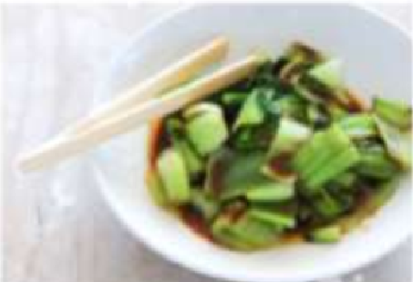

Bok Chai
Japanese Vegetarian
Five week course in London
A five week introduction to traditional Japanese vegetarian meals, teaching you a selection of rice and noodle dishes.
 Teriyaki Sauce
Teriyaki Sauce
Sauces Masterclass
One day workshop
An intensive one-day course looking at how to create the most delicious sauces for use in a range of Japanese cookery.
Popular Recipies
Contact
- Yoko's Kitchen
- 27 Redchurch Street
- Shoreditch
- London E2 7DP